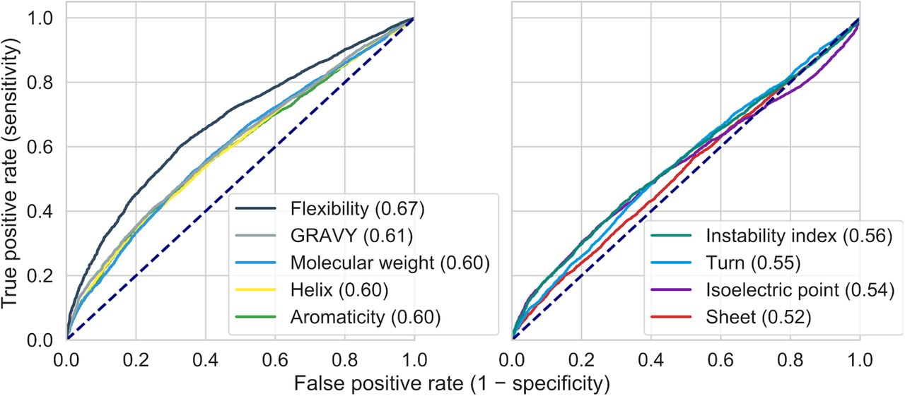
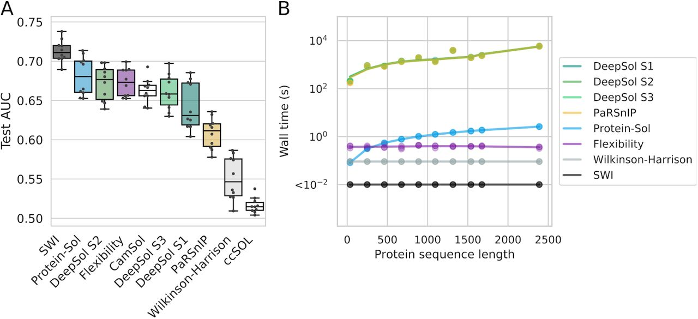

Solubility-Weighted Index
fast and accurate prediction of protein solubility
https://doi.org/10.1101/2020.02.15.951012
Bikash K Bhandari, Paul P Gardner, Chun Shen Lim
Gardner-BinfLab
Motivation
- Half of the cloned target are expressed.
- Half of the expressed proteins are purified (soluble).
-
Total success rate of getting a recombinant protein is around
a quarter.
Problems
- Protein expression
Solved using TIsigner
- Solubility
This paper
Datasets used
PSI:Biology (Feature analysis/Training)
-
12,216 target proteins on Escherichia coli with 8,238
soluble proteins.
- Binary labelled (Soluble/Insoluble).
eSOL (Testing)
- 3,198 E. coli proteins in a cell free system.
- Solubility expressed as percentages.
Features of the PSI:Biology data

Receiver Operating Characterstic (ROC) curves of protein features
in PSI:Biology data.
Flexibility
- Calculated by using normalised B-factors.
- B-factor is a measure of vibration of Cα atom.
- Each residue has a normalised B-factor.
-
Flexibility is the sliding window average of B-factors across
the protein.
B-factors are a measure of how much atoms oscillate from the mean position in average.
Solubility Weighted Index (SWI)
Based on flexibility, we developed a new predictor: SWI
|
Flexibility |
SWI |
| Based on |
Normalised B-factors |
Optimised weights |
| Method |
Sliding window average |
Average |
|
|
|
Solubility weighted index (SWI)
Comparision between B-factors and optimised weights
Solubility weighted index (SWI)

SWI is accurate and fast predictor of protein solubility
Solubility weighted index (SWI)
SWI correlates strongly with protein solubility in an independent
testing data (eSOL).
SoDoPE
Based on SWI, we also developed Soluble Domain for Protein
Expression (SoDoPE) at https://tisigner.otago.ac.nz/sodope.